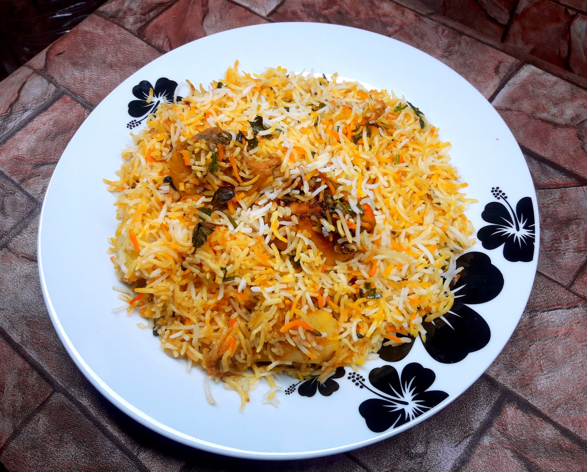

Recipe for Biryani

Description
Biryani is a mixed rice dish originating among the Muslims of the Indian subcontinent. It is made with Indian spices, rice, and usually some type of meat or in some cases without any meat, and sometimes, in addition, eggs and potatoes.
Biryani is one of the most popular dishes in South Asia, as well as among the diaspora from the region. Similar dishes are also prepared in other parts of the world such as in Iraq, Thailand, and Malaysia. Biryani is the single most-ordered dish on Indian online food ordering and delivery services and has been labelled as the most popular dish overall in India.
Ingredients
- Chicken/Goat meat
- Rice
- Vegetables
- Fennel Seeds
- Ghee
- Pepper
Steps
- In a pakki biryani, the rice, marinated meat, and any vegetables are partially ("three-quarters") cooked separately, before being combined into layers in a cooking vessel. Different layers of rice may be treated with different spices (e.g., with dissolved saffron or turmeric to give the rice different colours and flavours). The contents are then baked to complete the cooking and allow the flavours to combine. Alternatively, the components may be fully cooked, and then simply combined by layering before serving.
- In a kacchi biryani, layers of raw marinated meat are alternated in layers with wet, pre-soaked, raw rice (which may be treated with different spices as above), and cooked together by baking, or medium-to-low direct heat (typically, for at least an hour). Cooking occurs by a process of steaming from the ingredients' own moisture: the cooking vessel's lid is sealed (traditionally, with a strip of wheat dough) so that steam cannot escape (proper Dum pukht).
- A yoghurt-based marinade at the bottom of the cooking pot provides additional flavour and moisture. Potatoes often comprise the bottom-most layer (a technique also used in Iranian cuisine), because, with their natural moisture content, they brown well with less risk of getting burned accidentally. The lid is not opened until the dish is ready to serve.